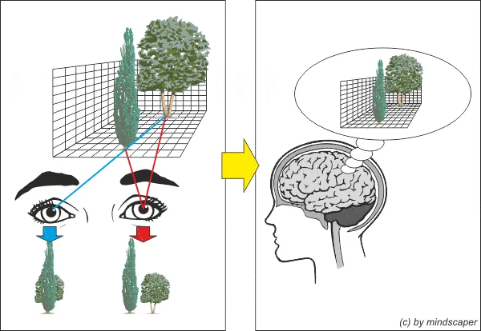
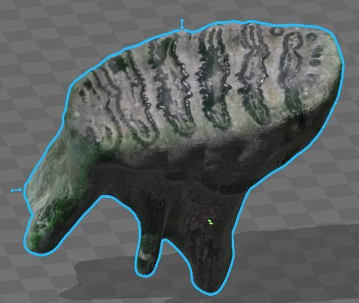
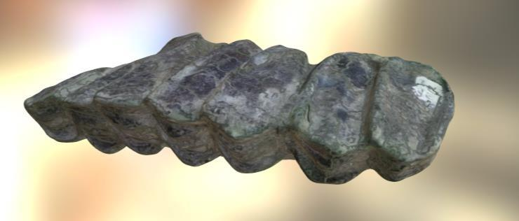
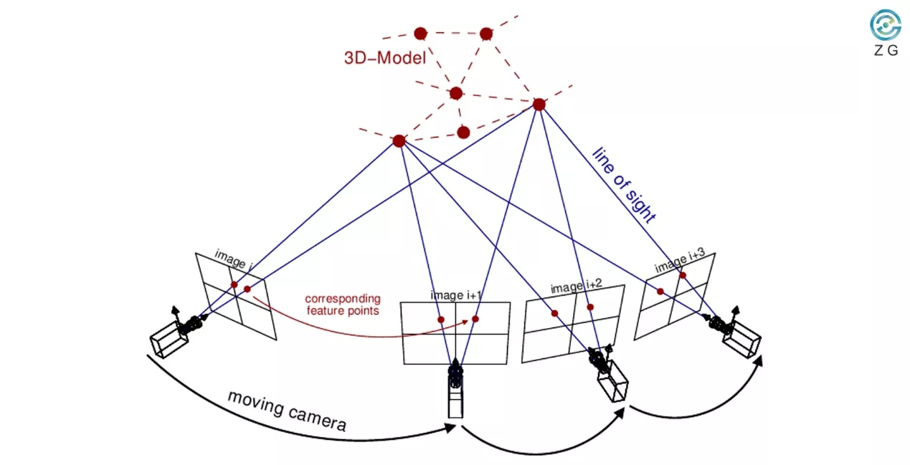
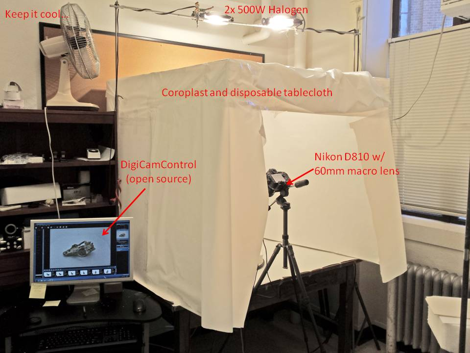
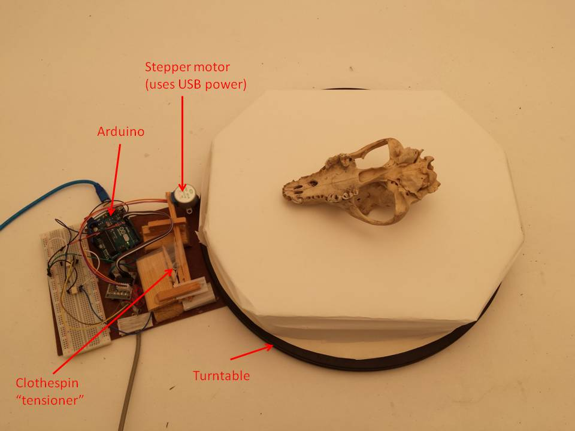
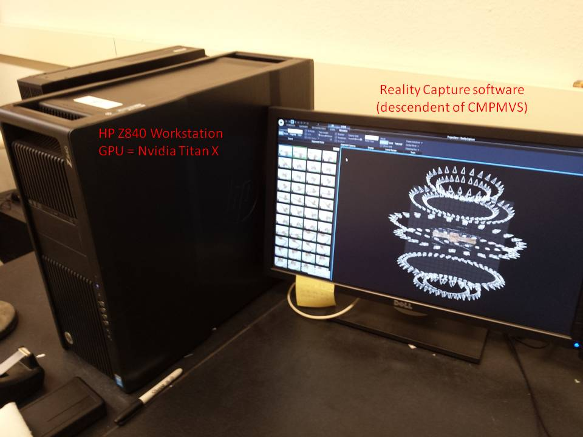

Paleontología Virtual
Día 2: Adquisición I (Fotogrametría)
2026-04-15
Introducción
¿Qué es la fotogrametría?
“Técnica cuyo objetivo es estudiar y definir con precisión la forma, dimensiones y posición en el espacio de un objeto utilizando esencialmente medidas sobre fotografías.”
- No es nueva: Utilizada desde el siglo XIX (Albrecht Meydenbauer).
- Evolución: De la documentación arquitectónica a la digitalización 3D masiva.
- En Paleontología: Permite capturar la forma y textura de los fósiles para crear “respaldos” digitales.

Captura de la forma por diferencias de ángulo de visión
¿Por qué en Paleontología?
- Conservación: Evita el manejo físico constante de ejemplares frágiles.
- Investigación: Morfometría geométrica, análisis biomecánicos (FEA).
- Divulgación: Museos virtuales interactivos.
- Accesibilidad: Repositorios como MorphoSource o UMORF.
Ejemplos Locales: Mammuthus y molares


Ejemplares del Museo de Paleontología de Guadalajara. Reconstruidos con hardware básico (4GB RAM) usando el flujo que aprenderemos hoy.
Fundamentos Técnicos
Principios Básicos: La Triangulación
La base de la fotogrametría es la geometría.
- A partir de fotografías tomadas desde al menos dos posiciones diferentes.
- Se establecen líneas que unen los puntos del objeto con su posición en la imagen.
- La intersección de estas líneas determina la coordenada X, Y, Z.

Principios de fotogrametría
Fotogrametría vs. Escáner Láser
| Característica | Fotogrametría (SfM) | Escáner Láser |
|---|---|---|
| Costo | $ (Cámara + PC) | $$$ (Equipo dedicado) |
| Color/Textura | Realista (Fotográfica) | A veces limitada |
| Escalabilidad | De un diente a un dinosaurio | Limitado por el hardware |
| Curva de aprendizaje | Sencilla a moderada | Técnica / Especializada |
Estrategias de Captura
El Decálogo del Fotogrametrista
Reglas de oro para una reconstrucción exitosa:
- Solape (Overlap): Mínimo 60-80% entre fotos.
- Iluminación: Difusa y uniforme.
- Nitidez: Objeto enfocado, evitar profundidad de campo baja.
- Textura: El objeto debe tener rasgos. Superficies lisas o brillantes fallarán.
- Fondo: Neutro y mate para evitar reflejos confusos.
- Movimiento: Mueve la cámara alrededor del objeto, no el objeto (si es posible).
Tecnología: Hardware y Software
El Hardware: ¿Qué necesito?
| Componente | Requerimiento Mínimo | Recomendado |
|---|---|---|
| Cámara | > 5 MP (Smartphone) | DSLR o Mirrorless |
| CPU | Dual-Core 3.0 GHz | Octa-Core+ |
| RAM | 4 GB | 16 GB+ |
| GPU | 1 GB (NVIDIA) | RTX 3060+ (CUDA cores) |
¡Cuidado con el calor!
El procesamiento estresa el CPU y la GPU al máximo. Monitorea la temperatura.
¿Por qué importa la GPU (CUDA)?
Analogía: El “Doctor” vs. “Los Niños”
CPU: El “Doctor en Matemáticas”
- Una sola persona increíblemente inteligente.
- Resuelve ecuaciones complejas.
- Para billones de sumas simples, tarda mucho.
GPU: “Miles de niños de primaria”
- CUDA Cores: Solo saben sumar 2 + 2.
- Pero son miles trabajando al mismo tiempo.
- Resuelven billones de píxeles en un instante.
“La fotogrametría es computacionalmente masiva. Necesitas muchos niños (GPU), no un solo genio (CPU).”
Software: Alternativas y Costos (2026)
| Software | Tipo de Licencia | Costo Aprox. | Ventaja Principal |
|---|---|---|---|
| Meshroom | Open Source | Gratis | Basado en nodos, muy potente. |
| RealityCapture | Gratuita / Sub. | Gratis (<$1M rev) | Velocidad extrema. |
| Metashape | Perpetua | $179 (Std) | El estándar en la academia. |
Recomendación 2026
RealityCapture es actualmente la mejor opción gratuita para investigación con presupuestos limitados.
Presupuestos Estimados (USD)
| Perfil | Equipo Sugerido | Inversión Software | Inversión Hardware |
|---|---|---|---|
| Básico / Campo | Smartphone + PC Home | $0 (Open Source) | $0 - $300 |
| Académico / Lab | DSLR + GPU RTX | $0 - $179 | $1,500 - $3,000 |
| Estándar Museístico | Z9/D850 + Estación PRO | $3,500 (Pro) | $8,000+ |
Workflow: Del Fósil al Modelo 3D
El Flujo de Trabajo (The Big Picture)
Metodología del Curso (VisualSFM + MeshLab)
Priorizamos entender el motor de la técnica.
1. Procesamiento SfM
- VisualSFM: Orientación y nube.
- SiftGPU / PBA: CUDA para velocidad.
- CMVS/PMVS2: Nube densa (.ply).
2. Post-procesamiento
- MeshLab: Reconstrucción Screened Poisson.
- Limpieza: Eliminación de ruido.
- Cierre de huecos: Mallas Manifold.
Ventaja en Linux
El uso de scripts de automatización en Linux permite procesar lotes masivos de fósiles de forma desatendida.
Caso de Estudio: UMORF (Pro)
Universidad de Michigan: Máxima Fidelidad
- Captura: Nikon D810 + 60mm Macro (f/32, ISO 64).
- Soporte: Cubos de acrílico transparentes.
- Patrón: ~150 fotos en 6 anillos.
- Color: Vertex Colors (color por vértice) para evitar distorsión de texturas UV.
UMORF: Metodología Visual


UMORF: Automatización


El “Problema” de la Escala
La fotogrametría estándar NO tiene escala real.
- El software reconstruye la forma, pero en un “espacio arbitrario”.
- Un diente de 5 cm puede medir 500 “unidades” en el modelo.
- Solución: Introducir una referencia métrica (escala) en la toma de fotos.
Escala Manual en Blender
Para corregir la escala, utilizaremos el Add-on Measure and Scale en Blender. Permite tomar una medida real (ej. 10 cm) y reescalar el objeto a la escala correcta. Descargar Measure and Scale
Resolución de Problemas
Problemas Comunes
- Nubes Incompletas: Falta de traslape. Solución: Más fotos en ángulos bajos.
- MeshLab se cierra: Insuficiencia de RAM. Solución: Simplificar nube antes de Poisson.
- Error “CMVS failed”: Ruta incorrecta de binarios. Solución: Verificar instalación.
Conclusión
Resumen del Día 2
- La fotogrametría es accesible pero requiere disciplina técnica.
- El éxito depende 80% de la toma de fotos y 20% del procesamiento.
- Es la base de la democratización de las colecciones paleontológicas.
¡Siguiente paso! Práctica de captura con especímenes reales.
Enlaces de Utilidad y Herramientas
Software del curso:
- VisualSFM (Reconstrucción SfM)
- MeshLab (Edición de mallas)
- CloudCompare (Precisión y Calibración)
- Blender (Edición de mallas)
Alternativas Profesionales:
- RealityCapture (Velocidad masiva)
- Meshroom (Open Source completo)
- Metashape (Perpetua)
Herramientas de Escala:
- Blender Measure and Scale (Add-on de escalado real)

E. Miguel Díaz de León Muñóz · Museo Virtual Nacional